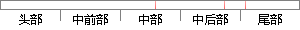

data = cursor.
片段位置图

相似结果|
相似片段 1： and Recordset is selected with server-side cursor. As for as storageprocedure, it is precompiled through data
相似片段 2：中取得数据A = cursor. data；%将数据给变量 Aciose（cursor）；%关闭指针ciose（conn）；%关闭数据库执行函数 data（）即可将组态王在 Access 中所创建
|
※ 片段修改建议 ※
近似词参考：